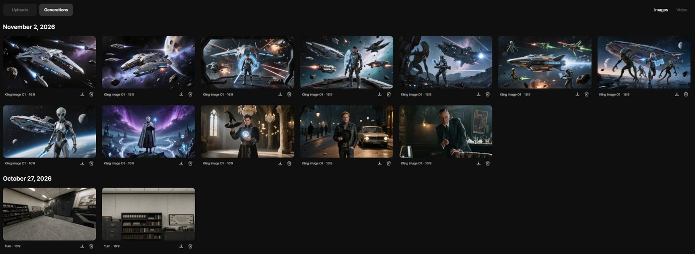

Xconda / 2026制作素材指南
ASSETS
Asset Library — 用户指南
把反复要找的脸、道具、场景和风格收进同一个架子：上传一次，取一个能被找到的名字，之后直接在生成器里挑选，不必把同一个文件再传一遍。
目录12 个章节
— 指南内容 —
素材库里有什么 · 打开素材库 · 界面构成 · 添加素材 · 名称和说明 · Generations 标签页 · 图像生成器 · 视频生成器与首尾帧模式 · 素材变多的时候 · 还没有的功能 · 词汇表 · 技巧与总结
1
UPLOADS
你自己上传的文件。人物、服装、道具、背景、风格帧这类手动收集的素材放在这里。
2
GENERATIONS
工具产出的结果。按日期堆叠，标签上标着模型和比例。
3
PICK
在生成器内打开结果面板的 Asset Library 标签页来挑选。
4
REUSE
用 Use selected assets 确认，再在提示词里用 @ 指向它。
— 说明 01 · 素材库本身不生成任何东西 —
它是生成之前伸手去取的架子：一张已经通过审核的脸、一套不能走样的服装、一个接下来几周都会反复用到的场景全景。
— 说明 02 · 依据真实应用界面编写 —
本指南中的所有界面，都是 2026 年 9 月初的产品用真实账号截取的。没有一张是示意图。
— 说明 03 · 现在还没有的东西 —
当前版本里没有文件夹、标签、集合、收藏、版本，也没有使用记录。空缺的功能和替代做法写在第 10 章。
— 说明 04 · 到底改善了什么 —
不必为每个镜头重传同一张脸。两下点击选出的一个小组合，就能替掉过去耗掉整个下午的翻文件夹。
界面会变 —
版本一变，按钮名称也会跟着变。照着流程走，但在教别人之前，先在自己的窗口里确认标签。
— 步骤 01 · 打开账户菜单 —
点击右上角头像。面板显示账户名称和邮箱，下面是一条 Credits 进度条——此画面中显示为 2,824 中的 0。
— 步骤 02 · 选择 Library —
Library 就在这个菜单里，停在该页面期间会保持高亮。高亮的那一行，就是你现在的位置。
— 步骤 03 · 认清相邻项 —
Pricing、QNA、Language、Admin、Log out 同在这个菜单里。切换 Language 会改变界面语言；本指南刻意保留英文界面标签。
 图 01 — 账户菜单中高亮的 Library，背后是 Uploads 网格
图 01 — 账户菜单中高亮的 Library，背后是 Uploads 网格— 步骤 04 · 读懂额度徽标 —
顶栏的数字是剩余额度。挑选参考本身不花额度，额度是在按下 Generate 时才真正减少的。
— 步骤 05 · 别只看侧栏 —
这个版本的左侧图标没有文字。点击之前先把鼠标移上去确认；以有名字的账户菜单为准。
按账户，不按项目
只要工具能引用素材，看到的都是同一个网格。所以能读懂的名字，比你把文件放在哪里更重要。
它不是本地文件夹
退出登录后，列表跟着账户走，而不是跟着这台电脑。丢了会心疼的素材，也要放在自己的硬盘上。
 图 02 — Uploads / Generations 标签、第一格的 Add asset 卡片，以及右上角的媒体筛选
图 02 — Uploads / Generations 标签、第一格的 Add asset 卡片，以及右上角的媒体筛选A
TAB BAR
Uploads 是你自己上传的文件，Generations 是工具产出的结果。当前标签用填充底色标出。
B
FILTERS
右侧的 All · Images · Video · Audio，具体显示哪些项取决于你在哪个标签页。
C
CARD GRID
缩略图、名称、下载与删除图标依次排列。Uploads 的第一格是 + Add asset。
— 步骤 01 · 读一张卡片 —
缩略图、文件名、下载箭头、垃圾桶。没有类型徽标，也没有标签行。同事能从这张卡片读到的说明，只有文件名。
— 步骤 02 · 按媒体筛选 —
Uploads 有 Images、Video、Audio；Generations 只有 Images 和 Video。音频卡片显示为波形，下面是文件名。
— 步骤 03 · 下载是唯一的出口 —
点箭头保存原始文件。目前这是备份素材、或把素材交给账户外他人的唯一办法。
— 步骤 04 · 删除立刻生效 —
垃圾桶会直接删掉一张卡片。界面上看不到撤销，所以点击前先确认名称，也先问一下团队。
没有搜索框 —
这个界面上没有搜索框、没有排序、也没有集合树。在搜索功能上线之前，命名规则就是搜索本身。这也是第 5 章不能跳过的原因。
+ Add asset→New Asset→Upload media→Create
— 步骤 01 · 打开对话框 —
点击虚线画出的第一格。图像和音频共用同一个对话框，你附上的文件决定网格里出现哪一类卡片。
— 步骤 02 · 在 100 字以内命名 —
Enter asset name 计到 100 字，Add description 计到 500 字。先填名称——真正会卡住你的就是这个计数器。
— 步骤 03 · 附上媒体 —
Upload media 支持拖放或点击。不先附文件就按 Create，会留下一张谁也用不了的空卡片。
 图 03 — 什么都没填的 New Asset 对话框
图 03 — 什么都没填的 New Asset 对话框— 步骤 04 · 写下来会用得上的说明 —
说明里写条件：主光、服装状态、角度，以及绝不能变的东西。像下一张图那样只写两个字，一个月后什么用都没有。
— 步骤 05 · Create 或 Cancel —
Create 即提交。你输入的名称成为卡片名，卡片排在 Uploads 最前面，不会被归进任何分类。
 图 04 — 同一个对话框填好后的样子：三个字的名称、两个字的说明、已附上的媒体。
图 04 — 同一个对话框填好后的样子：三个字的名称、两个字的说明、已附上的媒体。改名路径并不清楚 —
这个版本里看不到编辑卡片的入口。请把对话框当作把名字写对的唯一机会；与其去找也许并不存在的改名按钮，不如重传一次。
— 步骤 01 · 把类别放在前面 —
先大类，再变体：char_namyoung_side、prop_phone_black、bg_office_wide。产品自己的文件已经这么做了——Office_angle1_wide、audio_partA_25s。
— 步骤 02 · 短到卡片能读完 —
卡片会截断名称。两个词通常还留得住，五个就不行。把区分用的词放前面，让看得见的部分就是有用的部分。
— 步骤 03 · 写清复现条件 —
说明里写别人重建这一帧需要的东西：镜头质感、主光、服装状态，以及那个绝对不能动的一点。
— 步骤 04 · 写法统一成一种 —
真实素材库里既有简短的中文名，也有英文 snake_case 文件。两种都行，只要同一个对象全队只用一种写法。
— 步骤 05 · 用前缀代替分类 —
在集合功能上线之前，char_、bg_、prop_、audio_ 就是文件夹。不花成本，却能让平坦的网格变得容易扫过。
图 05 — 正在生成的真实卡片：三个字的名称、两个字的说明。 先命名，再上传
那个对话框就是索引。在那里花的一分钟，替掉几个月内都不会出现的搜索。
说明的 500 字不会浪费
写镜头的条件，而不是氛围。真正需要时想不起来的，恰恰是条件。
一个对象一种写法
同一个角色写成两种，素材库会悄悄裂成两半，而赶工的时候被选中的往往是错的那一半。
— 步骤 01 · 读日期标题 —
November 2 在 October 27 之上。最新的排在最上面，所以这个界面也兼作最近几天的工作记录。
— 步骤 02 · 拆解标签 —
Kling Image 01 · 16:9 是模型、镜头编号和比例。Turn · 16:9 是工具名加比例。标签会告诉你它由什么做出来，却从不告诉你它由什么素材做出来。
— 步骤 03 · 只看图像和视频 —
Generations 里只有 Images 和 Video。音频不是生成物，而是以文件形式进来，所以在 Uploads 那边。

图 06 — 按日期分组的 Generations，每个标签都带模型和比例。— 步骤 04 · 把结果升格为素材 —
把你想要的那一帧下载下来，切到 Uploads 标签页，用 + Add asset 添加。这条两步路，把一次好运变成可反复使用的材料。
— 步骤 05 · 这个界面会忘掉什么 —
结果留了下来，产出它的参考组合却没留下。如今重建这个组合只能手动做，第 10 章讲的重新生成开发正是改变这一点。
你最先会心疼的地方 —
第五次才终于把脸做对时，前面四次的失败和成功的那套组合已经从界面上消失了。当天不把它作为素材传上去，就只能凭记忆重找。
A
INPUT ASSETS
7 / 15 stored · Sending: Reference 7。用 Manage 调整已附上的内容。
B
PICKER
Saved assets 下面显示 IMAGE 和 VIDEO 的数量。为空时显示 No saved assets。
C
ACTION
什么都没勾时是 0 selected；在选择之前 Use selected assets 处于禁用状态。
— 步骤 01 · 先看数字 —
Input Assets 那一行把已存数量和上限并排列出，下面那行提示才说明真正的上限：每个模型最多 10 张图像。数字随模型而变，别猜，去读。
— 步骤 02 · 打开 Asset Library —
它是浮在结果之上的面板中间那个标签。Reference 显示本次上传的参考，Asset Library 显示账户里保存的全部素材。
— 步骤 03 · 一次选多个 —
每点一次就多一个黄色对勾，底部的数字随之上升。下图是选中四个的样子。这是旧的仅上传流程里没有的多选。
 图 07 — Image Generator 内的 Asset Library 标签：已保存图像 12 张，尚未选择。
图 07 — Image Generator 内的 Asset Library 标签：已保存图像 12 张，尚未选择。— 步骤 04 · 用 Use selected assets 确认 —
没有选择时按钮是暗的，选中后整组素材会挂到 Input Assets 上。按不动的黄色按钮是提醒，不是故障。
— 步骤 05 · 用 @ 指向参考 —
面板上写得很直接：在提示词里用 @ 指向生效的参考。用名字点名，永远好过把脸再描述一遍。
 图 08 — 选中四个：黄色对勾、实时数字，以及终于变为可用的 Use selected assets。
图 08 — 选中四个：黄色对勾、实时数字，以及终于变为可用的 Use selected assets。选择免费，生成付费 —
十个参考和两个参考花的钱一样。同一屏的 Generate 按钮上写着 48 credits，把预算花在真正撑住风格的那两三帧上。
— 步骤 01 · 确认模式 —
Models 下方的 Mode 显示为 First/last frame。首尾帧模式用两个端点决定镜头，所以挑这两张图要比挑参考更谨慎。
— 步骤 02 · 留意数字徽标 —
Input Assets 里每张卡片都带一个小数字徽标，标明它被分配到哪个端点。有徽标意味着已经确定，而不只是附上。
— 步骤 03 · 读那行灰色提示 —
首尾帧模式会发送指定的 Start 和 End 图像；参考选择会被保留，但处于非激活状态。你选的东西被记住了，但它不会影响这次渲染。
 图 09 — First/last frame 模式的 Seedance 2.5：数字分配、48 / 50 stored、灰色非激活提示。
图 09 — First/last frame 模式的 Seedance 2.5：数字分配、48 / 50 stored、灰色非激活提示。— 步骤 04 · 盯住已存数量 —
48 / 50 stored 意味着再整理一次就撞到上限。要在被卡住之前清理，而不是在交片当天。
— 步骤 05 · 音频也有槽位 —
素材库里的 AUDIO 数量，在视频面板上表现为三个空槽位。这里不能生成音频，但可以附上音频。
首尾帧模式里，文字胜过参考 —
图里那段长提示词用句子把镜头锁住：固定机位、一镜到底、不切、无字幕。谁在画面里用参考说明，发生了什么用文字说明。
01
STORED
账户里已保存的素材数。视频面板显示 48 / 50。这是硬顶，不是建议值。
02
PER RUN
一次生成里 Input Assets 能带走的数量。图像面板显示为 7 / 15。
03
PER MODEL
模型自身的参考上限，例如最多 10 张图像。在这一行下面确认。
— 步骤 01 · 分清三个数字 —
已存、单次、单模型是三种不同的上限，会产生三种不同的报错。搞混其中一个，按下 Generate 的那一刻尝试就会崩掉。
— 步骤 02 · 让网格保持短 —
卡片按面板宽度每行排四到八张。超过三行，面板就会把提示词和 Generate 按钮挤出视线。
— 步骤 03 · 离开后重新确认选择 —
退出登录或切换工具后，选择有时保留、有时消失，行为并不一致。花额度之前，重新打开标签页把数字读一遍。
— 步骤 04 · 只删没人用的东西 —
垃圾桶按卡片删除，而界面上没有使用记录。出现在已交付镜头里的素材，删之前先问团队。
每周一分钟
清空上传队列，给新加的东西起名，把丢了会心疼的那组下载下来。
每月整理一次
清掉重复和没被采用的风格。没有归档功能，先备份到本地再删除是唯一干净的做法。
项目收尾时
素材库里只留最终那一组。下一次制作从判断开始，而不是从残留物开始。
COLLECTIONS
集合
没有。文件名前缀代替了它的作用。
VERSIONS
版本
没有。新文件就是新卡片，两者之间没有任何关联。
USAGE
使用记录
没有哪个镜头在用这个素材的列表。删除前请先确认。
REGENERATE
重新生成
无法重新读取过去结果背后的参考组合。仅在 Image 与 Video Generator 中开发。
SYNC
同步
有账户反映部署后素材变得不可用。原因和频率仍在调查中。
— 步骤 01 · 重新生成还没有 —
读取过去结果背后的参考组合属于一期开发项，范围是 Image Generator 和 Video Generator。暂时不要对其他工具做出承诺。
— 步骤 02 · 分类全靠手 —
没有集合、标签、版本和使用记录。第 5 章的命名规则不是风格建议，它顶替的是一个还没上线的数据库。
— 步骤 03 · 部署带着已报告的风险 —
发布之后，有账户遇到素材不可用的情况，既不固定发生，也没有日志记录。频率未知，请假设自己的账户也可能遇到。
— 步骤 04 · 给无法重建的东西上保险 —
把审核通过的组合下载到本地，保持一套命名规则，项目交付时把最终那组存下来。三个习惯就够，不需要额外工具。
最快过时的一章 —
依据的是 2026 年 9 月 1 日评审时的产品。等集合、版本或重新生成上线，先改这一页，其余十一章留着不动。
Add asset
Add asset
Uploads 第一格的虚线卡片，点开就是 New Asset 对话框。
New Asset
New Asset
收集名称、说明和一个媒体文件的对话框。
Enter asset name
Enter asset name
会变成卡片名的字段，100 字。
Add description
Add description
写复现条件的 500 字字段。
Upload media
Upload media
拖放或点击即可附上文件。
Create / Cancel
Create / Cancel
提交或取消。按 Create 之前先检查媒体。
Uploads
Uploads
你自己上传的文件的标签页。
Generations
Generations
工具产出的标签页，按日期分组。
All · Images · Video · Audio
媒体筛选
筛选行。具体显示哪些项取决于所在标签页。
Input Assets
Input Assets
本次运行附上的参考，以及已存数量。
Reference
Reference
本次运行专门上传的参考标签页。
Asset Library
Asset Library
账户里保存的全部素材的标签页。
Use selected assets
Use selected assets
把勾选的卡片确定为参考。为零时禁用。
stored
stored
像 48 / 50 stored 这样把已存数量和上限并排写的方式。
Start · End frame
Start · End frame
首尾帧模式在其之间渲染的两张端点图像。
Credits
Credits
生成所花费用的单位，余额显示在顶栏。
— 技巧 01 · 先命名再上传 —
那个对话框是名字还便宜的最后时刻。今天写下的 char_namyoung_side，省掉十一月的翻找。
— 技巧 02 · 一个对象一张卡片 —
把同一张脸略有不同的版本再传一遍，就会有两个脸可选。赶工的时候，总有人选错。
— 技巧 03 · 成功当天就上传 —
终于对的那张结果，也只有变成素材才能反复用。趁着还记得它为什么奏效，当天就传上去。
— 技巧 04 · 工作组合控制在十个以内 —
上限是设计，不是障碍。四个好的参考，胜过十个互相打架的参考。
— 技巧 05 · 无法重建的就下载 —
自己生成的参考、以及客户已经认可的结果，除了素材库，也该放在自己的硬盘上。
— 技巧 06 · 看数字，别靠记忆 —
已存数量、已选数量、额度，都印在界面上。只看这三个数字，就能挡掉大多数失败的运行。
素材库的用处
收集一次、好好命名，让每个工具用名字找到它，而不是重新上传一遍。
最低限度的纪律
能读懂的名称、写得清楚的说明、一个媒体文件。每一次，没有例外。
能救下一个镜头的检查
读数字、把组合保持精简、无法复现的东西先下载。